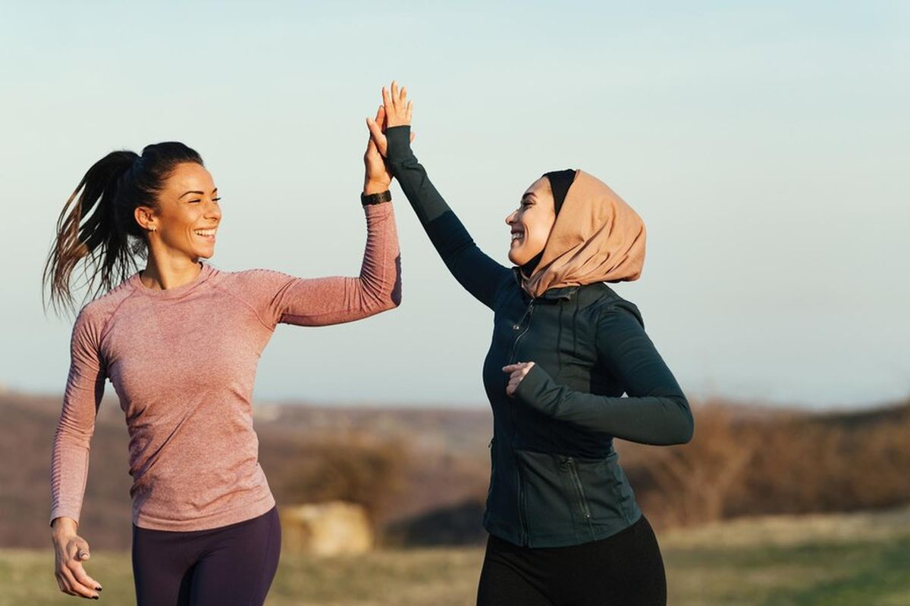

Olahraga di Akhir Pekan Bisa Bantu Cegah Kepikunan hingga Stroke
Sumber: Kompas.com
Sabtu, 7 September 2024

Ilustrasi aktivitas olahraga untuk menjaga kesehatan tubuh.
Berolahraga secara rutin merupakan salah satu kebiasaan yang dapat membantu menjaga kesehatan tubuh dan otak.
Kompas.com memberitakan bahwa olahraga pada akhir pekan tetap dapat memberikan manfaat bagi kesehatan meskipun tidak dilakukan setiap hari. Aktivitas fisik dapat membantu menjaga kebugaran tubuh sekaligus memberikan manfaat bagi kesehatan otak.
Manfaat Olahraga bagi Kesehatan
Berdasarkan berita tersebut, olahraga berkaitan dengan penurunan risiko beberapa masalah kesehatan. Aktivitas fisik juga dapat membantu menjaga kesehatan mental dan membuat tubuh tetap aktif.
Salah satu manfaat yang dibahas adalah kaitan olahraga dengan penurunan risiko demensia atau kepikunan. Selain itu, olahraga juga dapat membantu mengurangi risiko penyakit seperti stroke.
Olahraga Tidak Harus Setiap Hari
Berolahraga pada akhir pekan tetap dapat memberikan manfaat. Hal ini dapat menjadi pilihan bagi orang yang memiliki aktivitas padat pada hari kerja. Aktivitas fisik tetap perlu dilakukan secara aman dan sesuai kemampuan tubuh.
Kesimpulan
Menjaga kesehatan dapat dilakukan melalui kebiasaan sederhana, salah satunya dengan melakukan aktivitas fisik. Olahraga secara teratur dapat membantu menjaga kebugaran tubuh dan kesehatan otak.
Kompas.com — "Olahraga di Akhir Pekan Bisa Bantu Cegah Kepikunan hingga Stroke"